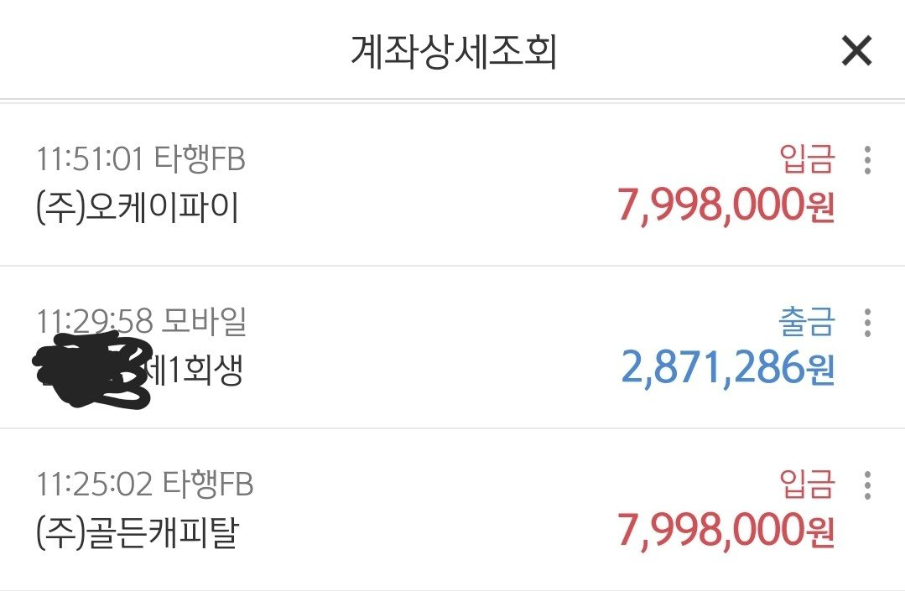

[개인회생자대출] [개인회생자 대출] 조영우 이사와의 대출후기
서비스판매직종사하는 일반사원 (정규직,재직기간 1년 3개월) 연봉 약3400/ 월145만원 변제 미납1.98회, 필요금액1500

이직을 하면서 줄어든 급여에 회생중이던 변제금이 점점 힘에부쳐갈때 인터넷 서핑으로 알게되었어요 36회차중 15회남았고 미납 1.98로 조회되었죠..
두군데로 800씩해서 미납금납부조건으로 1600승인되었고 아침9시30분전 모든필요서류 전송하고 입금까지 당일오전중으로 다끝났네요 조금더 이른입금 가능할수있었으나 재직확인전화가 늦어져서 쪼끔 늦어진거였어요 그래도 빠릅니다 조영우이사님 덕분에 급한불끕니다 너무감사합니다
https://cafe.naver.com/cityman88/285700